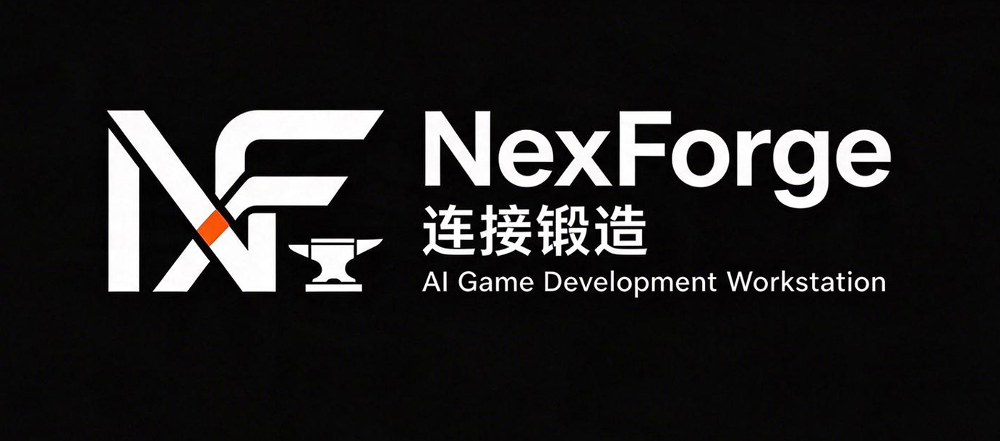

游戏设计与关系
整理任务线、角色、阵营、关系、地图、场景对白、物品和制作资料，让上下文互相连接。

NexForge · 连接锻造，把游戏设计、真实资产、AI 辅助、Blender 与 Unreal Engine 放进同一条可追踪、可检查的制作流程。

不把 AI 当成不受约束的黑盒。你选择素材和目标，查看范围并作出决定；工作站帮助组织资产、预览动作，并连接专业工具。
整理任务线、角色、阵营、关系、地图、场景对白、物品和制作资料，让上下文互相连接。
组织图片、音视频、模型、Blender 文件与 UE 原生资源。类型识别、封面和内容预览状态分开呈现。
索引 UE 动画序列、蒙太奇、混合空间与姿态资产；区分动作片段、骨架和动画蓝图等类型。
悬停播放、移开停止；可复用预览缓存。大型模板列表滚动并按可见范围绘制。
按 Blender 版本安装连接入口，支持场景读取及本地制作工作流；首次安装可能需要重开软件。
AIGW Bridge 安装到所选 UE 工程；目标明确、工程身份可核对，必要时保存并重开编辑器。
开发者和创作者可以查看公开资料、提出可复现问题、讨论 Blender/UE 连接，并提交改进建议。反馈时请注明软件与编辑器版本、复现步骤；请先移除 API Key、令牌、私人项目和受限素材。
许可说明：当前应用 package.json 标注为 UNLICENSED。公开可下载不等于已授予自由复制、修改或再发布的许可；KayKit 的 CC0 声明仅适用于相应模板素材。当前源码 ZIP 是较早快照，尚未包含 2026-11-28 全部代码改动。
NexForge brings game design, real assets, AI assistance, Blender, and Unreal Engine into one traceable workflow. It is human-led and local-first: you choose the inputs, review the scope, and decide what to apply.
Organize missions, characters, factions, maps, scene dialogue, items, and production notes as connected context.
Work with images, audio/video, models, Blender files, and native UE assets. Type recognition is separate from visual preview.
Index UE sequences, montages, blend spaces, and pose assets while distinguishing clips from skeletons and animation Blueprints.
Hover to play, move away to stop, reuse preview caches, and scroll large libraries with visible-range rendering.
Install the appropriate connection for your Blender version and use local scene workflows. First-time setup may require reopening Blender.
Install AIGW Bridge in a selected UE project with target identity checks; saving and reopening may be required.
You select assets, references, and goals. AI proposes within an explicit scope; you decide what to use. Editor connectivity does not configure an AI model.
Projects and assets stay organized locally. Recognition, preview, and complete production verification are distinct capabilities.
Review the public materials, report reproducible issues, discuss Blender/UE connections, and suggest improvements. Include app/editor versions and reproduction steps. Remove API keys, tokens, private projects, and restricted assets before sharing.
License: the application package.json is marked UNLICENSED. Public availability does not grant permission to freely copy, modify, or redistribute it. KayKit's CC0 notice applies only to those assets. The current source ZIP is an earlier snapshot and does not include all code changes dated 2026-11-28.